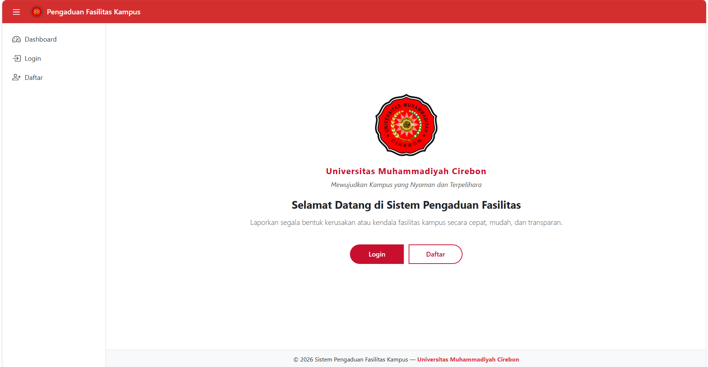

Web Development
Sistem Informasi Pengaduan Fasilitas Kampus
Membangun sistem informasi pengaduan fasilitas kampus berbasis web untuk mempermudah mahasiswa dalam menyampaikan laporan kerusakan atau permasalahan fasilitas. Mengembangkan fitur pengelolaan pengaduan, status laporan, serta manajemen data oleh admin.
Laravel
PHP
MySQL
Bootstrap